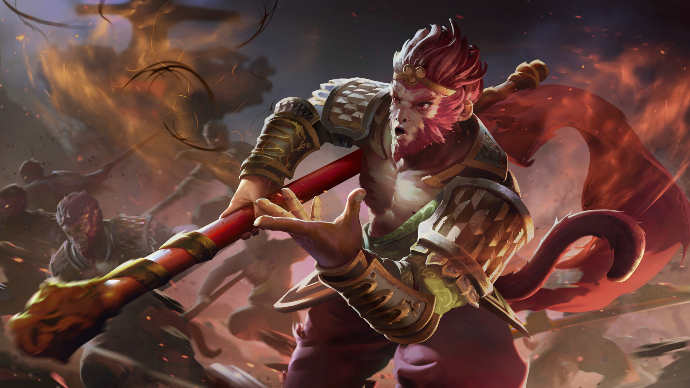

HTML/CSS WEBSITE MADE BY MARTIN (MIO) LUNA

HTML/CSS WEBSITE MADE BY MARTIN (MIO) LUNA
MONKEY KING

For 500 years the mountain pressed down upon him, only his head free from the crushing weight of the stonewrought prison
the elder gods had summoned to halt his childish rebellion. Moss grew along the lines of his exposed face, tufts of
grass sprouted from his ears; his vision was framed in wildflowers reaching from the soil around his cheeks. Most
thought him long dead, tormented by the gods for waging war against the heavens until naught but his legend survived.
But, as the stories go, the Monkey King cannot die.
So he waited. Until the gods came to offer a chance at absolution, he endured. And when they did come to name the price,
Sun Wukong accepted their charge: he would accompany a young acolyte on a secret pilgrimage, protect him from demons and
dangers of the road, and guide the man home in possession of a coveted relic. Do that, and humbly obey the human's
commands in service to their holy mission, and Wukong would prove himself reformed.
For a change, Sun Wukong fulfilled his oath to the gods with honor, and atoned for the sins of past insurrections. The
acolyte, much learned in hardships, was returned to his home temple, relic in hand; and Wukong-finding himself for the
first time in proper standing with any gods of consequence-was content for a short while to give up his old thirst for
adventure and glory. But the Monkey King was born for mischief...and offending the gods never gets old.
Sun Wukong, the Monkey King, is a melee agility hero, best known for his slippery nature and his ability to do Mischief,
deceiving his enemies by turning into trees and other objects. Armed with his magic extending staff, the Monkey King
slams the ground with Boundless Strikes, and leaps to the treetops to have advantage over his foes with Tree Dance.
Perched on a tree, he gains a clear view of his surroundings, allowing him to jump down on unsuspecting targets, dealing
heavy damage and slowing their escape with Primal Spring. As a carry, the Monkey King is granted extra damage and
lifesteal from Jingu Mastery after landing consecutive attacks on his opponents. In a teamfight, at Wukong's Command an
army of clones is sent out across the battlefield to fight for him, while he himself has his armor increased. Together
with the help of his clones and his team, the Monkey King is a force to be reckoned with.